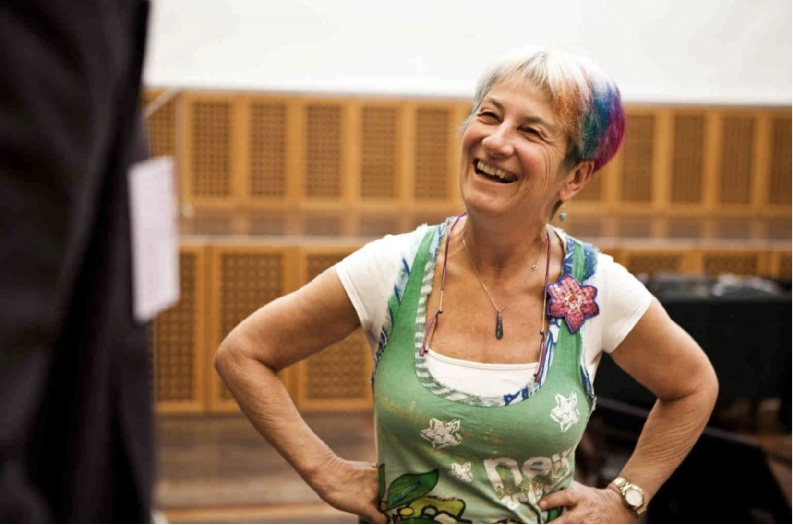

Holding Our Identity Lightly
Susan Blackmore was a fresher at Hilda’s suffering through Michaelmas. It was the tail end of the days of psychedelia and flower power, and cannabis was easy to obtain. After long days of lectures, tutes, and essay writing as a psychology student, Blackmore enjoyed both the heightened perceptions and lowered sense of humor that cannabis let loose.
One night, Blackmore “had smoked just enough to induce a mild synaesthesia” and felt a “sensation of rushing through a long, dark tunnel of rustling leaves towards a bright light. Soon, time and space had lost their meaning.” Sobering up, Blackmore found that nothing in her degree could remotely begin to cope with this experience. “We were learning about rats’ brains and memory mechanisms, not mind and consciousness – let alone a mind that could apparently leave its body and travel around without it.”
This out-of-body experience convinced Blackmore of the reality of psychic phenomena and launched her on a crusade to show the closed-minded scientists that consciousness could reach beyond the body and that death was not the end. This led Blackmore to pursue a PhD in parapsychology and spend years in Spiritualist churches where she wore New Age clothing and trained as a witch. Before she could consciously realize, being a paranormal believer became who she was. This belief was ingrained into her identity.

But just a few years of careful experimentation changed all this. She found no statistical evidence in telepathy, precognition or clairvoyance—only wishful thinking, self-deception, and unreplicable experimental error. Blackmore threw away paper after paper on psychokinesis (X-Men Magneto), aromatherapy (healing oils) and extrasensory perception, and emptied the last of her once meticulously organized filing cabinets. “If cold turkey does strike, the dustbin men will have taken away my fix,” she later recounted.
Even though most of us do not identify as paranormal believers (hopefully), we can all imagine how hard this process must have been for her. Starting again and losing all the power and status of being an expert is a daunting prospect, especially in academia. But just like how Blackmore’s identity made it difficult for her to face the truth, we are equally apprehensive in changing our beliefs the deeper it is entangled with our identity, especially if it is one we have publicly defended or displayed.
Just like how we wear clothes for others to perceive us in certain ways, so is true of our beliefs. When beliefs become a part of our identity, it signals to others not only what we think, but how we want to be perceived. One may be drawn to nihilism because it makes them seem edgy, while another to optimism because it makes them likable, regardless of if we genuinely believe in these ideas. Thus, even though conventionally we see the primary function of persuasion as changing others’ beliefs, this is not the complete story. We don’t share our views just to persuade others of our opinions, we also try to persuade others that we hold our opinions, which signals the type of person we are. Just as there are fashions in clothing, so too are there fashions in ideas.
But nobody likes people who wear dirty clothes with weird stains on them. Similarly, nobody advocates selfish or indefensible ideas. So for the sake of our image, we reach for defensible explanations for our beliefs. The reason I started The Oasis is definitely all about intellectual diversity and bringing our community closer together. It’s certainly not about improving my social reputation and others’ perception of my intelligence. This is called motivated reasoning, and it makes our identities seem more genuine and moral.
But when discourse serves not the function of what we perceive but how we want to be perceived, motivated reasoning becomes the antithesis of truth-seeking. Instead, it seeks to protect and validate our identity.
In some religious communities, committing acts against your faith means losing your marriage, family, and entire social support system. Identity plays a similar role. Members of a certain identity, say, of a Democrat, are expected to share pro-abortion, anti-gun, and pro-immigration beliefs. Dissent from the status-quo may not disbar you from your whole community, but will certainly alienate you from other members within.
This does not mean that following the status-quo of a social group is inherently wrong: one can certainly believe that being socially left-wing is indeed beneficial to society, while simultaneously identifying as a democrat, holding this label contingent to their belief.
However, the danger arises when members of identity groups become so devout that members hold their group identity paramount, suspending individual judgment and refusing to question parts of their identities. Holding one’s group’s values and subjecting them to empirical evidence would mean being disloyal to your social circle. Rejecting any evidence that threatens its figurative honor demonstrates in-group loyalty.
Thus, another way we use motivated reasoning is to discount evidence presented against our group’s sacrosanct identity. Gamers are more skeptical of studies that show the harmfulness of violent video games and catholics are more skeptical when a priest is accused of sexual assult.
When someone criticizes a belief that is part of our identity, it is antagonizing. It’s as if someone is insulting our family or stomping on our country’s flag. This is why I find the way that Blackmore changed her mind incredible and rare. It would have been virtually impossible if she wasn’t a scientist who believed in randomized controlled trials. We rarely think about issues through looking at empirical evidence when they are fundamental to who we are and which team we support.
But when our perceptions of the world impact others’ physical well-being, the truth matters a lot. In democratic systems, where we collectively shape public policy outcomes through our beliefs, it is paramount to separate identity from rational judgment. Identifying strongly with a belief makes us feel like we have to be ready to defend it at all costs, which motivates us to focus our attention on collecting evidence in its favor. It wrecks our ability to think and achieve goals effectively.
I’m sure we all know someone who relentlessly boasts their volunteer work in an underprivileged community. Are they really effective altruists, or are they using the underprivileged to validify their identity to others similarly privileged? I suspect the latter, which is not only economically inefficient (they could’ve done more actual good with less work) but morally repulsive. Instead of making effective changes based on what we espouse, actions we take to fulfill our identities are often biased towards self-image, not practical impact.
What’s worse, in politics, identity-affirming policies can even harm the very groups of people we proclaim to care about. Conservatives justify anti-immigration policies on protecting the domestic economy when most economic literature shows that open immigration benefits local workers and doubles world GDP (we don’t care if our workers are less well off, as long as I don’t see the disgusting foreigners in my town!). Liberals justify high minimum wages on inequality concerns when they were, in fact, instituted during the Jim Crow era so that racist employers can lawfully lay off a disproportionate amount of black workers (I don’t see the unemployed exploited by the evil capitalists!).
What we need to do is not abandon our identities, but hold them lightly so they don’t colonize our thoughts and values. We have to recognize and combat our innate cravings for labels and identity to define who we are. Shared identities and labels often inhibit individual rational thought, which is important in the pursuit of truth, especially when the truth that we perceive often has a significant impact on third parties in social policies and the livelihoods and freedoms of others.
Someone who holds her identity lightly is happy when her party wins an election. But she is happy because she expects her party to do a better job leading the country, not because the other side suffered a humiliating defeat. Holding an identity lightly means treating our identities as contingent to our own rational thought; it means maintaining a sense of our own beliefs and values, independent of the tribe’s beliefs and values.